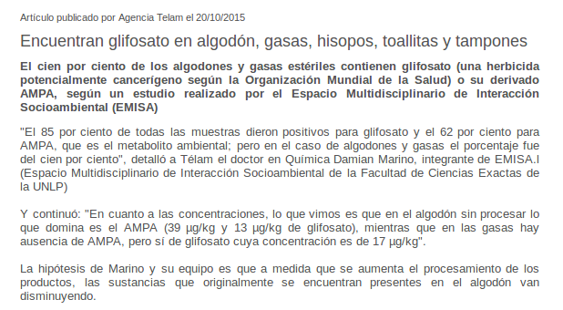

Contaminantes ambientales y su impacto a la salud

www.contaminantesambientales.ar
Universidad Nacional de Río Cuarto
Ignacio Origlia Licencia de producción de pares


Agroquímicos
Vías de exposición
Vía Oral o digestiva:
- Por comer cuando se fumiga
- Por consumir alimentos con restos de plaguicidas

Vía Inhalatoria:
- Sólidos (polvo)
- Líquidos (vapor)
- Gases (mezclados con el aire)
+ importante en ambientes de trabajo pero puede llegar por deriva a la población
Vía Dérmica
Depende de:
- Superficie expuesta
- Estado de la Piel
- Liposolubilidad de la sustancia

tipos de toxicidad
Toxicidad aguda
características/sintomas:
Toxicidad crónica
- No producen efectos precoces visibles
- Suele ser acumulativo y reflejarse en daño a diversos órganos y sistemas
- Se suele asociar a enfermedades en el mediano o largo plazo o en la descendencia de los sujetos expuestos
Existen plaguicidas que pueden tener una baja toxicidad aguda (clasificados como poco tóxicos) y a su vez representar un peligro importante para la salud de las personas expuestas durante largos períodos de tiempo; es decir que sus efectos están relacionados a la exposición crónica.
Clasificación de los plaguicidas
Ia - Producto Sumamente Peligroso
Ib - Producto muy Peligroso
II - Producto Moderadamente Peligroso
III - Producto Poco Peligroso
IV - Producto que normalmente no ofrece Peligro
Ley de agroquímicos (N°9164)
CAPÍTULO XV: DE LAS PROHIBICIONES
Artículo 58º: PROHÍBESE la aplicación aérea dentro de un radio de mil quinientos (1500) metros del límite de las plantas urbanas, de productos químicos o biológicos de uso agropecuario, de las Clases Toxicológicas Ia, Ib y II.
Artículo 59º: PROHÍBESE la aplicación terrestre, dentro de un radio de quinientos (500) metros a partir del límite de las plantas urba-nas de municipios y comunas, de productos químicos o biológicos de uso agro-pecuario, de las Clases Toxicológicas Ia, Ib y II.
Artículo 58º: PROHÍBESE la aplicación aérea dentro de un radio de quinientos (500) metros del límite de las plantas urbanas, de productos químicos o biológicos de uso agropecuario, de las Clases Toxicológicas III y IV.
SENASA
- La OMS tomando como indicador la DL-50 clasifica los plaguicidas en función de la toxicidad del producto puro
- No se tiene en cuenta la toxicidad crónica, carcinogénesis, teratogénesis, genotoxicidad ni efectos reproductivos de cada producto en dicha clasificación
- No se tiene en cuenta que el plaguicida puede ser transformado tanto en el ambiente como en el organismo expuesto en otros compuestos de igual o mayor actividad biológica
- No se tiene en cuenta la formulación comercial que puede generar efectos sinérgicos entre los compuestos y potenciar el efecto
- Esta clasificación es la que toma SENASA en Argentina para regular la actividad
Use a spacebar or arrow keys to navigate.
Press 'P' to launch speaker console.